DAVI (Data Visualization & Interaction) is a modular Single Page Application (SPA) designed to transform static movie datasets into an interactive Knowledge Graph. By leveraging the Semantic Web stack (RDF, SPARQL, Ontologies), DAVI moves beyond traditional relational database limitations, allowing users to explore movies through their hidden connections, shared genres, common tags, and implicit relationships.
The system implements a microservices architecture using FastAPI as an API Gateway and Apache Jena Fuseki as the triple store. The frontend, built with Angular 21, features advanced visualizations including a 3D Force-Directed Graph and interactive charts, providing users with a "big picture" view of the MovieLens 100k dataset.
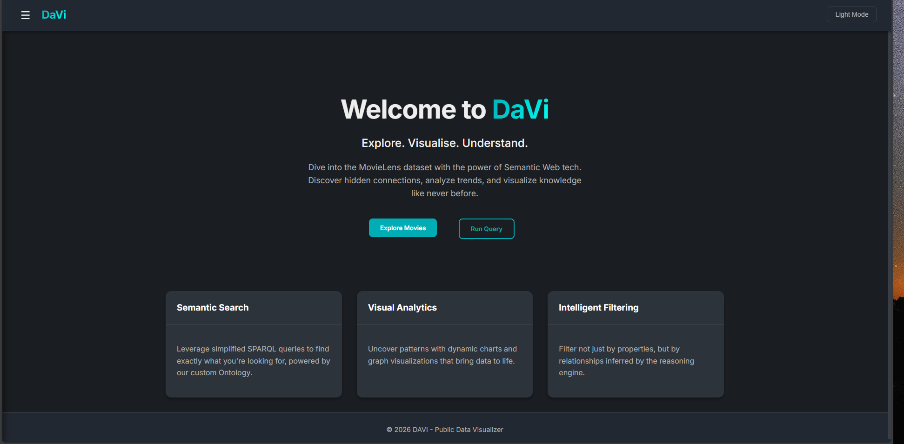
In the modern digital landscape, recommender systems are often "black boxes." Users are fed suggestions without understanding why. DAVI aims to democratize this data by:
A comprehensive walkthrough of the application's features and architecture is available below:
The project adheres to a clean Service-Oriented Architecture (SOA). Each layer has a distinct responsibility, ensuring modularity and facilitating independent testing.
The architecture is visualized using the C4 model to show different levels of abstraction.
The Context diagram shows how DAVI fits into the ecosystem, interacting with the User and the external MovieLens Dataset.
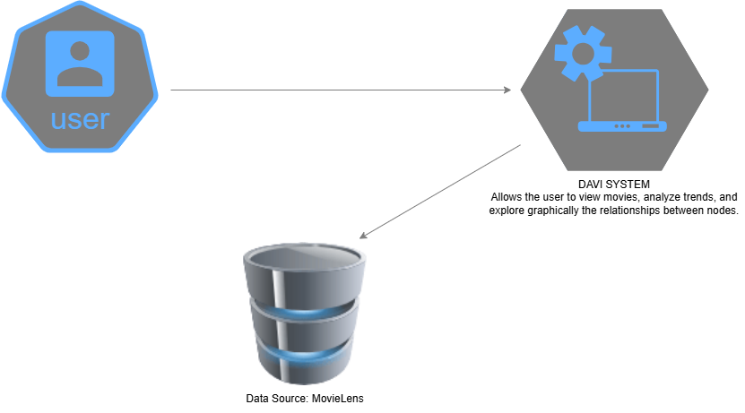
The Container diagram drills down into the high-level technical blocks: the Angular SPA, the FastAPI Backend, and the Fuseki Triple Store.
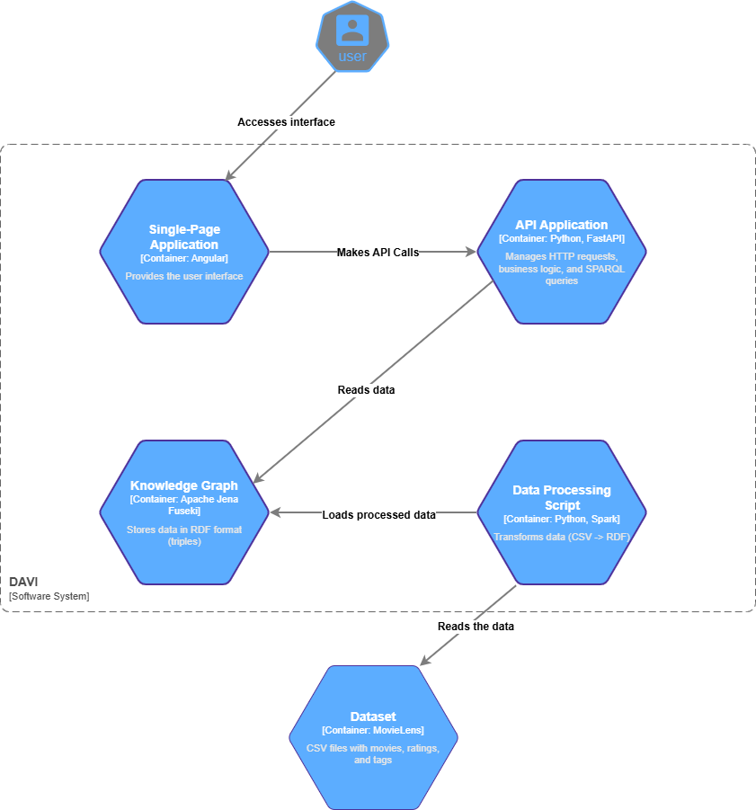
We selected a modern, robust stack to ensure high performance and developer ergonomics:
3d-force-graph: WebGL-powered graph rendering.ngx-charts: For statistical bar/pie charts.SPARQLWrapper: For executing queries against Fuseki.rdflib: For parsing and serializing Turtle (`.ttl`) files.The backend exposes a RESTful API that abstracts the complexity of SPARQL. It transforms frontend JSON requests into SPARQL queries, executes them, and formats the results back to JSON.
The Component diagram breaks down the API Application into its core modules: Controllers, Services (Business Logic), and Repositories (Data Access).
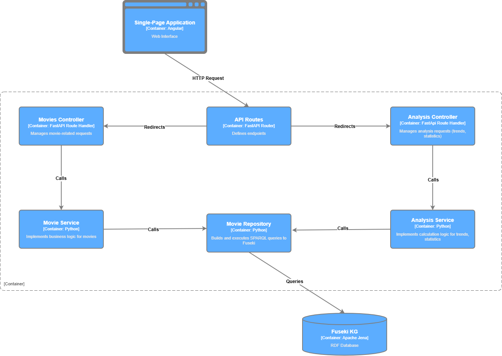
GET /: Retrieve all movies.POST /: Create a new movie.GET /search: Core search engine with filters (genre, year, rating).GET /search_by_title: Text-based search for movie titles.GET /compare: Compare multiple movies side-by-side.GET /graph: Data optimized for the 3D visualizer (Nodes/Links).GET /{movie_id}: Retrieve detailed movie metadata.PUT /{movie_id}: Update movie information.DELETE /{movie_id}: Delete a movie (cascading).GET /stats: System-wide statistics (counts, distributions).GET /facets: Filter facet data.GET /trends/famous: Most popular (reviewed) movies.GET /trends/rated: Highest-rated movies.GET /trends/yearly/{year}: Trends for specific years.GET /api/genres: Genre hierarchy for smart filtering.POST /api/ratings: Submit user ratings.GET/POST /api/sparql: Direct SPARQL query execution.
Unlike a SQL schema, our data model is a flexible graph defined by an Ontology. We manually designed the schema using schema.ttl to persist it, ensuring full control over the semantic structure.
The ontology defines the following core classes and properties, mapped meticulously to Schema.org:
owl:Class)
schema:Movie.:MovieLensDataset (Provenance).:hasGenre (ObjectProperty -> :Genre), :hasTagLabel (DatatypeProperty -> xsd:string).owl:Class)
schema:Person.owl:Class)
schema:DefinedTerm.:subCategoryOf (Transitive Property) to create a hierarchy (e.g., :War -> :Emotional).owl:Class)
schema:Rating.:ratedBy (User), :ratingOf (Movie), :ratingValue (float).
The schema also includes custom inference rules. For example, we introduced high-level super-categories (genre:Emotional, genre:Exciting, etc.) to allow the system to infer that an Action movie is also Exciting.
DAVI respects the 5-star Linked Data principles:
http://example.org/movielens/Movie/1).
The system transforms the raw MovieLens 100k dataset (CSV) into a semantic graph.
The transformation logic convert_csv_to_rdf.py cleans the data, handles missing values, and mints URIs.
The application provides a dedicated interface for executing raw SPARQL queries directly against the Knowledge Graph. This allows power users to explore the data without UI constraints.
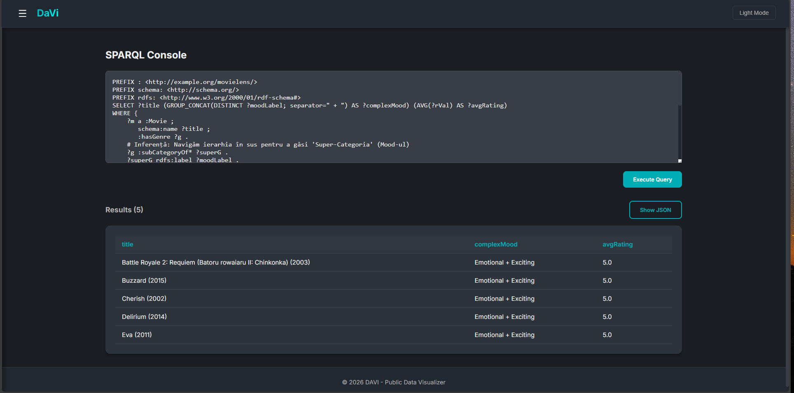
We implement non-trivial queries to extract insights. For example, to find movies that bridge multiple high-level emotional spectrums (e.g., both "Intellectual" and "Exciting"), we use an aggregation query that groups inferred super-categories:
PREFIX : <http://example.org/movielens/>
PREFIX schema: <http://schema.org/>
PREFIX rdfs: <http://www.w3.org/2000/01/rdf-schema#>
SELECT ?title (GROUP_CONCAT(DISTINCT ?moodLabel; separator=" + ") AS ?complexMood) (AVG(?rVal) AS ?avgRating)
WHERE {
?m a :Movie ;
schema:name ?title ;
:hasGenre ?g .
?g :subCategoryOf* ?superG .
?superG rdfs:label ?moodLabel .
# Filter for top-level mood categories
FILTER(?superG IN (
<http://example.org/movielens/Genre/Emotional>,
<http://example.org/movielens/Genre/Exciting>,
<http://example.org/movielens/Genre/Intellectual>,
<http://example.org/movielens/Genre/FamilyFriendly>
))
# Collect ratings
OPTIONAL {
?r :ratingOf ?m ;
:ratingValue ?rVal .
}
}
GROUP BY ?title
HAVING (COUNT(DISTINCT ?superG) >= 2)
ORDER BY DESC(?avgRating)
LIMIT 5
Scenario: A user wants to find "clusters" of related movies visually rather than scrolling a list.
Visualization Details:
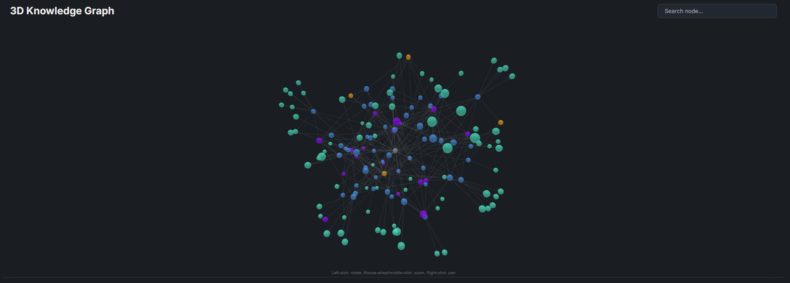
Graph Search:
When investigating specific nodes, the graph highlights direct connections:
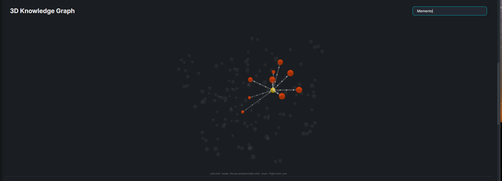
Scenario: A user looks for highly-rated movies from a specific era.
The "Movies" section allows users to search and apply granular filters including Genre, Year, and Rating.
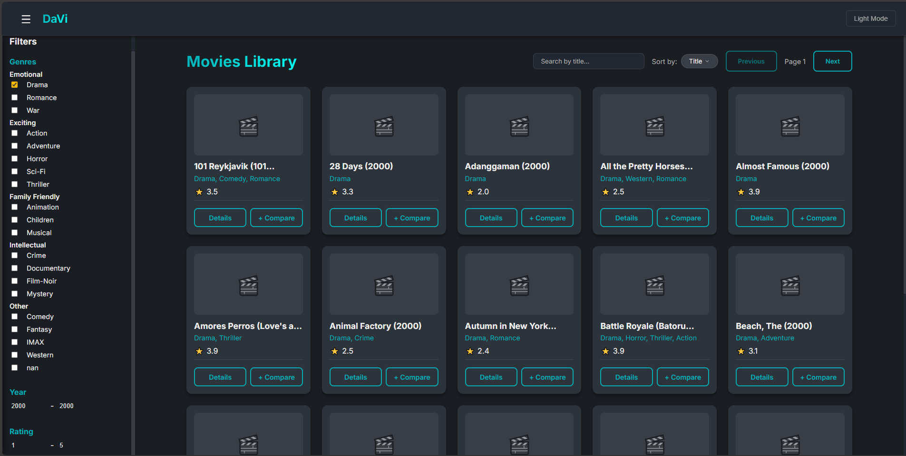
Example Filter:
Filtering for Drama movies released in 2000 with a rating between 1.0 - 1.5.
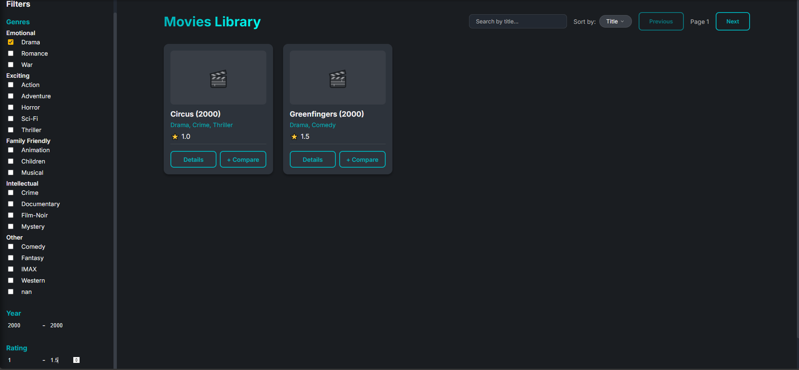
Scenario: Assessing if a movie is worth watching.
Features:
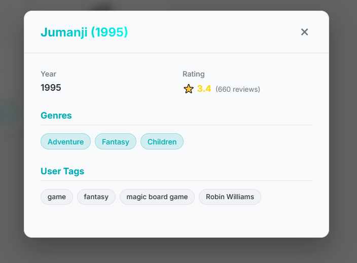
Scenario: A user can't decide between two movies.
Steps:
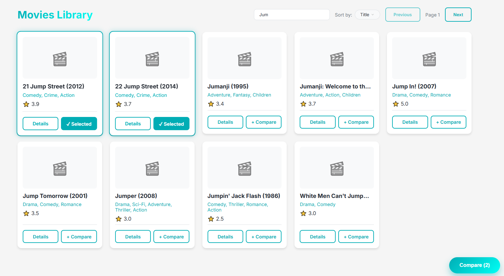
Comparison Result:
Upon clicking the compare button, a modal appears comparing attributes side-by-side:
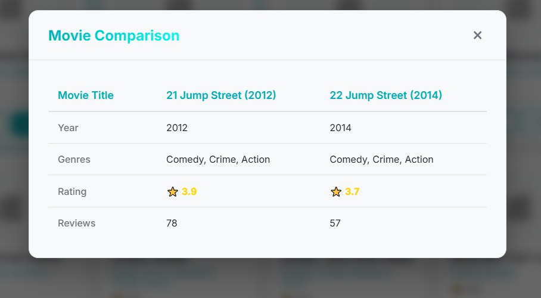
Scenario: Analyzing the popularity of genres and rating distributions over time.
The Statistics page provides an overview of the dataset, including total movies, users, genres, and ratings. It includes charts for genre distribution.
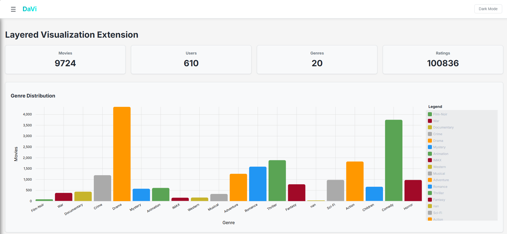
Users can compare how different genres perform in terms of average user ratings.
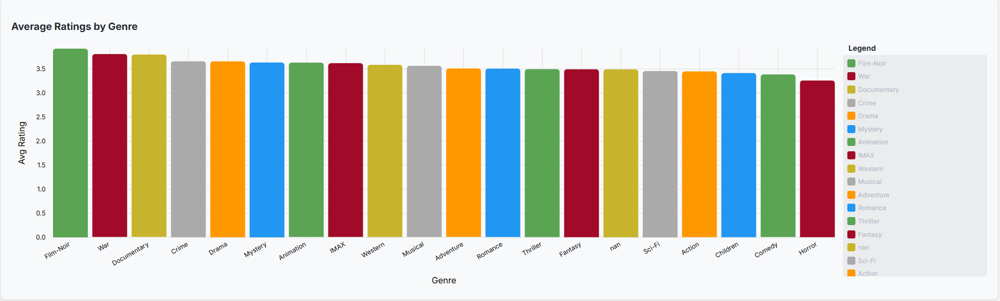
The Trends section highlights the most popular movies (by review count) and highest-rated movies.
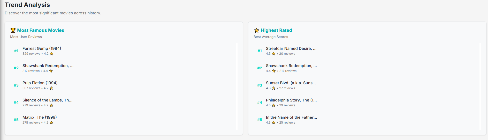
These trends can be further filtered by release year to see historical performance.
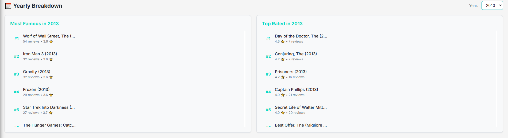
While the current iteration meets the core WADe requirements, we envision several enhancements for Version 2.0: